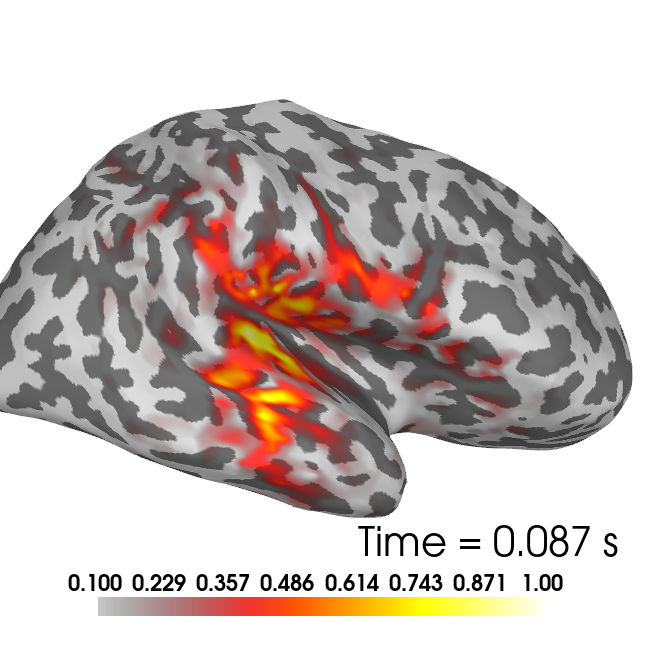
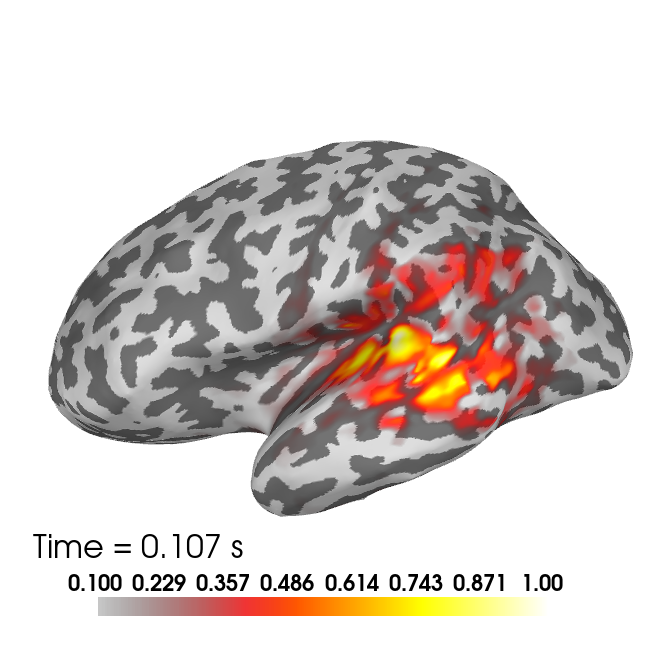

Note
Go to the end to download the full example code
Test of the MEG-informed parcellations on MEG experimental datasets¶
Import the required packages
import os.path as op
import numpy as np
from mne import (read_forward_solution, pick_types_forward,
convert_forward_solution, pick_types,
compute_covariance, find_events, Epochs,
SourceEstimate, extract_label_time_course,
read_labels_from_annot)
from mne.io import read_raw_fif
from mne.datasets import sample
from mne.viz import plot_source_estimates, get_brain_class
import pickle
import megicparc
from megicparc.utils import read_dipole_locations, compute_inv_op_rank
from megicparc.viz import plot_flame_labels, plot_flame_centroids
Define input parameters for the flame algorithm running in megicperc
knn = 30
gamma = 0.4
theta = 0.05
sensors_meg = 'grad'
parc = 'aparc'
folder_fl = op.join('..', 'data', 'data_mne_sample')
string_target_file = op.join(folder_fl,
'{:s}_flame_grad_k{:d}_gamma{:1.2f}_theta{:1.2f}.pkl')
Define input parameters for the flame algorithm running in megicperc
depth = None
method = 'dSPM'
tmin_snr = 0.0
tmax_snr = 0.15
tmin_res = 0
tmax_res = 0.15
Load lead-field matrix and the anatomy-based parcellation
data_path = sample.data_path()
subjects_dir = op.join(data_path, 'subjects')
subject = 'sample'
fwd_file = op.join(data_path, 'MEG', subject, 'sample_audvis-meg-eeg-oct-6-fwd.fif')
fwd = read_forward_solution(fwd_file)
fwd = pick_types_forward(fwd, meg=sensors_meg, eeg=False,
ref_meg=False, exclude='bads')
fwd = convert_forward_solution(fwd, surf_ori=True, force_fixed=True,
use_cps=True)
label_lh = read_labels_from_annot(subject=subject, parc=parc, hemi='lh',
subjects_dir=subjects_dir)
label_rh = read_labels_from_annot(subject=subject, parc=parc, hemi='rh',
subjects_dir=subjects_dir)
label = label_lh + label_rh
Reading forward solution from /u/29/sommars1/unix/mne_data/MNE-sample-data/MEG/sample/sample_audvis-meg-eeg-oct-6-fwd.fif...
Reading a source space...
Computing patch statistics...
Patch information added...
Distance information added...
[done]
Reading a source space...
Computing patch statistics...
Patch information added...
Distance information added...
[done]
2 source spaces read
Desired named matrix (kind = 3523) not available
Read MEG forward solution (7498 sources, 306 channels, free orientations)
Desired named matrix (kind = 3523) not available
Read EEG forward solution (7498 sources, 60 channels, free orientations)
Forward solutions combined: MEG, EEG
Source spaces transformed to the forward solution coordinate frame
203 out of 366 channels remain after picking
Average patch normals will be employed in the rotation to the local surface coordinates....
Converting to surface-based source orientations...
[done]
Reading labels from parcellation...
read 34 labels from /u/29/sommars1/unix/mne_data/MNE-sample-data/subjects/sample/label/lh.aparc.annot
Reading labels from parcellation...
read 34 labels from /u/29/sommars1/unix/mne_data/MNE-sample-data/subjects/sample/label/rh.aparc.annot
Load MEG data and estimate noise covariance matrix
# Load raw data
raw_fname = op.join(data_path, "MEG", "sample",
"sample_audvis_filt-0-40_raw.fif")
# Compute evoked data
# Ref: https://mne.tools/stable/auto_tutorials/inverse/30_mne_dspm_loreta.html#sphx-glr-auto-tutorials-inverse-30-mne-dspm-loreta-py
raw = read_raw_fif(raw_fname) # already has an average reference
events = find_events(raw, stim_channel="STI 014")
event_id = dict(aud_l=1)
tmin = -0.2 # start of each epoch (200ms before the trigger)
tmax = 0.5 # end of each epoch (500ms after the trigger)
raw.info["bads"] = ["MEG 2443", "EEG 053"]
baseline = (None, 0) # means from the first instant to t = 0
reject = dict(grad=4000e-13, mag=4e-12, eog=150e-6)
epochs = Epochs(
raw,
events,
event_id,
tmin,
tmax,
proj=True,
picks=("meg", "eog"),
baseline=baseline,
reject=reject,
)
epochs.apply_baseline((None, 0))
evoked = epochs.average()
picks_inv = pick_types(evoked.info, meg=sensors_meg, exclude='bads')
y_ev = evoked.data[picks_inv, :]
# Estimate covariance matrix
noise_cov = compute_covariance(
epochs, tmax=0., method=['empirical'])
C = noise_cov.data[np.ix_(picks_inv, picks_inv)] / len(epochs)
# Estimate SNR and regularization parameter for the inverse operator
_, S, V = np.linalg.svd(C)
log_ratio_s = np.log(S[0:-1]) - np.log(S[1:])
rank = np.argmax(log_ratio_s)
rank = rank + 1
ssv = np.arange(0, rank)
W = np.dot(np.diag(1/np.sqrt(S[ssv])), V[ssv])
yW = W.dot(y_ev)
est_snr = np.sum(yW**2, axis=0) / rank
mean_snr = np.mean(est_snr[
(evoked.times>=tmin_snr) & (evoked.times <=tmax_snr)])
lam = 1/mean_snr
print('***************************************')
print('Estimated rank %2d' %rank)
print('Estimated snr %2.2f' %mean_snr)
print('Estimated lam %2.2f' %lam)
Opening raw data file /u/29/sommars1/unix/mne_data/MNE-sample-data/MEG/sample/sample_audvis_filt-0-40_raw.fif...
Read a total of 4 projection items:
PCA-v1 (1 x 102) idle
PCA-v2 (1 x 102) idle
PCA-v3 (1 x 102) idle
Average EEG reference (1 x 60) idle
Range : 6450 ... 48149 = 42.956 ... 320.665 secs
Ready.
319 events found
Event IDs: [ 1 2 3 4 5 32]
Not setting metadata
72 matching events found
Setting baseline interval to [-0.19979521315838786, 0.0] s
Applying baseline correction (mode: mean)
Created an SSP operator (subspace dimension = 3)
4 projection items activated
Applying baseline correction (mode: mean)
Rejecting epoch based on EOG : ['EOG 061']
Rejecting epoch based on EOG : ['EOG 061']
Rejecting epoch based on EOG : ['EOG 061']
Rejecting epoch based on EOG : ['EOG 061']
Rejecting epoch based on EOG : ['EOG 061']
Rejecting epoch based on MAG : ['MEG 1711']
Rejecting epoch based on EOG : ['EOG 061']
Rejecting epoch based on EOG : ['EOG 061']
Rejecting epoch based on EOG : ['EOG 061']
Rejecting epoch based on EOG : ['EOG 061']
Rejecting epoch based on EOG : ['EOG 061']
Rejecting epoch based on EOG : ['EOG 061']
Rejecting epoch based on EOG : ['EOG 061']
Rejecting epoch based on EOG : ['EOG 061']
Rejecting epoch based on EOG : ['EOG 061']
Rejecting epoch based on EOG : ['EOG 061']
Rejecting epoch based on EOG : ['EOG 061']
NOTE: pick_channels() is a legacy function. New code should use inst.pick(...).
Removing projector <Projection | Average EEG reference, active : True, n_channels : 60>
Loading data for 72 events and 106 original time points ...
Rejecting epoch based on EOG : ['EOG 061']
Rejecting epoch based on EOG : ['EOG 061']
Rejecting epoch based on EOG : ['EOG 061']
Rejecting epoch based on EOG : ['EOG 061']
Rejecting epoch based on EOG : ['EOG 061']
Rejecting epoch based on MAG : ['MEG 1711']
Rejecting epoch based on EOG : ['EOG 061']
Rejecting epoch based on EOG : ['EOG 061']
Rejecting epoch based on EOG : ['EOG 061']
Rejecting epoch based on EOG : ['EOG 061']
Rejecting epoch based on EOG : ['EOG 061']
Rejecting epoch based on EOG : ['EOG 061']
Rejecting epoch based on EOG : ['EOG 061']
Rejecting epoch based on EOG : ['EOG 061']
Rejecting epoch based on EOG : ['EOG 061']
Rejecting epoch based on EOG : ['EOG 061']
Rejecting epoch based on EOG : ['EOG 061']
17 bad epochs dropped
Computing rank from data with rank=None
Using tolerance 2.8e-09 (2.2e-16 eps * 305 dim * 4.2e+04 max singular value)
Estimated rank (mag + grad): 302
MEG: rank 302 computed from 305 data channels with 3 projectors
Created an SSP operator (subspace dimension = 3)
Setting small MEG eigenvalues to zero (without PCA)
Reducing data rank from 305 -> 302
Estimating covariance using EMPIRICAL
Done.
Number of samples used : 1705
[done]
***************************************
Estimated rank 195
Estimated snr 9.56
Estimated lam 0.10
Estimate source activity on the original source-space
L = fwd['sol']['data']
W_inv = compute_inv_op_rank(L, C, lam,
depth=depth, method=method, rank=rank)
x_full = W_inv.dot(y_ev)
# Collapse activity on anatomical regions
stc_aux = SourceEstimate(x_full,
[fwd['src'][0]['vertno'], fwd['src'][1]['vertno']],
tmin = evoked.times[0], tstep = evoked.times[1]-evoked.times[0],
subject = subject)
x_an_mean = extract_label_time_course(stc_aux, label,
fwd['src'], mode='mean_flip')
x_an_pca = extract_label_time_course(stc_aux, label,
fwd['src'], mode='pca_flip')
Given rank = 195 - num eigenvalues = 195
Extracting time courses for 68 labels (mode: mean_flip)
Extracting time courses for 68 labels (mode: pca_flip)
Estimate source activity on the reduced source-space defined by the centroid of the parcels
target_file = string_target_file.format(subject, knn, gamma, theta)
print('Loading %s'%target_file)
with open(target_file, 'rb') as aux_lf:
flame_data = pickle.load(aux_lf)
num_roi = flame_data['centroids']
L_red = fwd['sol']['data'][:, flame_data['centroids_id']]
W_red = compute_inv_op_rank(L_red, C, lam,
depth=depth, method=method, rank=rank)
x_fl = W_red.dot(y_ev)
print('***************************************')
print('Number of MEG-informed parcels=%d' %num_roi)
Loading ../data/data_mne_sample/sample_flame_grad_k30_gamma0.40_theta0.05.pkl
Given rank = 195 - num eigenvalues = 195
***************************************
Number of MEG-informed parcels=75
Plot source estimated on full source-space
vertices_plot = [fwd['src'][0]['vertno'], fwd['src'][1]['vertno']]
flame_labels = megicparc.store_flame_labels(
flame_data, fwd['src'], subject)
nv_lh = fwd['src'][0]['nuse']
times = evoked.times
aux_t = np.where((times > tmin_res) & (times < tmax_res))[0]
t_peak_lh = aux_t[np.argmax(np.max(abs(x_full[0:nv_lh, aux_t]), axis=0))]
t_peak_rh = aux_t[np.argmax(np.max(abs(x_full[nv_lh:, aux_t]), axis=0))]
Brain = get_brain_class()
x_full_norm = np.zeros(x_full.shape[0])
x_full_norm[0:nv_lh] = abs(x_full[0:nv_lh, t_peak_lh]) \
/ np.max(abs(x_full[0:nv_lh, t_peak_lh]))
x_full_norm[nv_lh:] = abs(x_full[nv_lh:, t_peak_rh]) \
/ np.max(abs(x_full[nv_lh:, t_peak_rh]))
stc_full = SourceEstimate(x_full_norm[:, np.newaxis], vertices_plot,
tmin = 0, tstep = 1, subject=subject)
brain = plot_source_estimates(stc_full, subject, surface='inflated',
hemi='both', subjects_dir=subjects_dir, background='white',
foreground='black', time_label=None, time_viewer=False,
clim={'kind' : 'value', 'lims' : [0.1, 0.5, 1]}, size=(650, 650))
brain.show_view(azimuth=0, elevation=90)
brain.add_text(0.95, 0.13, 'Time = %0.3f s'%times[t_peak_rh],
font_size=20, justification='right', color='black')
brain2 = plot_source_estimates(stc_full, subject, surface='inflated',
hemi='both', subjects_dir=subjects_dir, background='white',
foreground='black', time_label=None, time_viewer=False,
clim={'kind' : 'value', 'lims' : [0.1, 0.5, 1]}, size=(650, 650))
brain2.show_view(azimuth=180, elevation=90,distance=600)
brain2.add_text(0.05, 0.13, 'Time = %0.3f s'%times[t_peak_lh],
font_size=16, justification='left', color='black')
- 
- 
Plot Source estimation on the reduces source-space
nf_lh = np.where(flame_data['centroids_id'] < nv_lh)[0].shape[0]
t_peak_lh_fl = aux_t[np.argmax(np.max(abs(x_fl[0:nf_lh, aux_t]), axis=0))]
t_peak_rh_fl = aux_t[np.argmax(np.max(abs(x_fl[nf_lh:, aux_t]), axis=0))]
peak_fl_lh = np.argmax(abs(x_fl[0:nf_lh, t_peak_lh_fl]), axis=0)
peak_fl_rh = np.argmax(abs(x_fl[nf_lh:, t_peak_rh_fl]), axis=0) + nf_lh
idx_fl = [peak_fl_lh+1, peak_fl_rh+1]
brain_fl = Brain(subject, hemi='both', surf='inflated', background='white',
subjects_dir=subjects_dir, alpha=1, size=(650, 650))
plot_flame_labels(idx_fl, flame_labels, fwd['src'],
subject, subjects_dir, color = [1, 0.64, 0.], brain=brain_fl)
plot_flame_centroids(flame_data, fwd['src'], subject,
subjects_dir, brain=brain_fl, scale_factor=0.65)
brain_fl.show_view(azimuth=0, elevation=90)
brain_fl.show_view(azimuth=180, elevation=90)
""
''
Total running time of the script: (0 minutes 25.844 seconds)